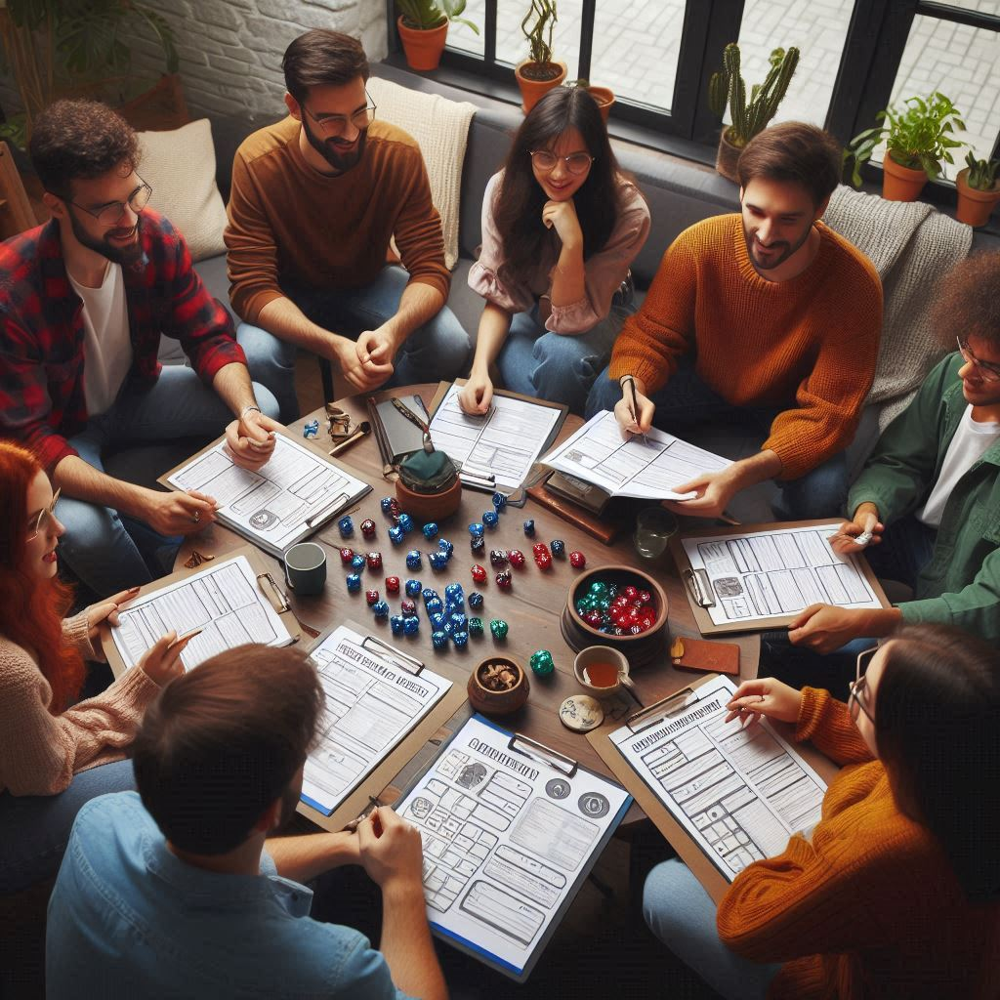
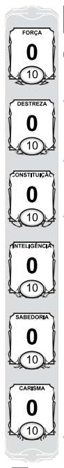
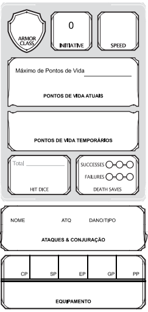
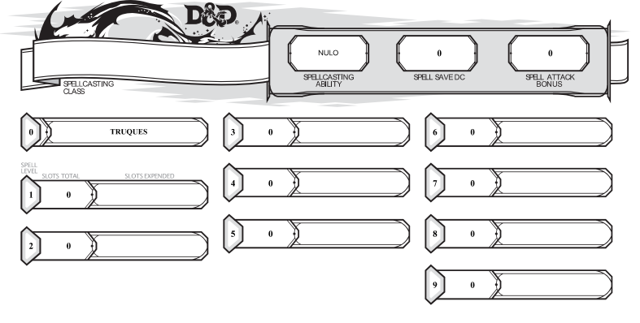
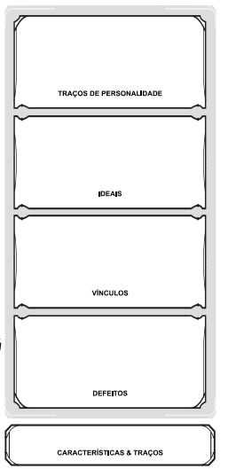
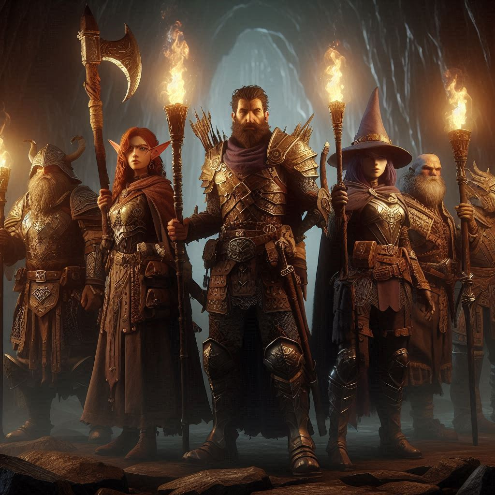

Se aventurar no mundo do RPG é embarcar em uma jornada única, onde sua imaginação ganha vida e suas decisões moldam destinos. Para começar essa jornada, é essencial compreender os fundamentos que guiam essa experiência. Desde a criação do seu próprio personagem até a imersão na narrativa elaborada pelo Mestre, cada passo é uma oportunidade para explorar, aprender e crescer. Neste guia sobre como jogar RPG como um jogador, vamos explorar os aspectos essenciais que o ajudarão a mergulhar de cabeça nesse universo de aventuras e fantasia.
Criando seu Personagem:
Antes de começar a jogar, você precisa criar seu próprio personagem. Isso inclui escolher uma raça (humano, elfo, anão, etc.), uma classe (guerreiro, mago, clérigo, etc.) e definir as características do seu personagem, como habilidades, pontos fortes e fracos, história de fundo e personalidade. Você pode usar as regras do livro do jogador para ajudá-lo a criar seu personagem, ou até mesmo usar fichas prontas disponíveis online.

Entendendo as Regras Básicas:
É importante ter uma compreensão básica das regras do jogo. Isso inclui entender como as jogadas de dados funcionam, o que cada tipo de dado representa (d4, d6, d8, d10, d12, d20), e como calcular seus pontos de vida, seus espaços de magias caso tenha, seu bônus de proficiência de acordo com o nível inicial. Na maioria dos casos você vai usar o d20 para executar uma ação, suas perícias que determinam no que você é muito bom, e cada classe pode conceder mais habilidades ou capacidades dependendo.
Montagem de ficha:
Quando o jogo começar, você se reunirá com outros jogadores em torno de uma mesa (ou online) com um Mestre do Jogo (ou Narrador) que conduzirá a história. Você descreverá as ações do seu personagem, como mover-se, atacar, lançar feitiços, interagir com outros personagens e resolver enigmas ou desafios apresentados pelo Mestre. Para entender melhor como seu personagem se comporta e age no jogo, é importante compreender como montar uma ficha de personagem. Abaixo, explicaremos detalhadamente os componentes essenciais da ficha, que incluem classes e raças, atributos e modificadores, salvaguardas e perícias, sessão de combate, ataques, magias e características do personagem. Com essas informações, você estará pronto para criar e interpretar seu personagem de forma eficiente e divertida em Dungeons & Dragons 5ª Edição.
Classes e Raças
Classes: Em Dungeons & Dragons (D&D) 5ª Edição, as classes definem a vocação ou profissão do personagem. Cada classe tem habilidades, pontos fortes e fracos únicos. As principais classes são:
- Bárbaro: Um guerreiro feroz que utiliza sua fúria para aumentar sua força em combate.
- Bardo: Um artista que usa música e magia para apoiar e encantar aliados e confundir inimigos.
- Clérigo: Um servo divino que usa magia concedida pelos deuses para curar e proteger.
- Druida: Um guardião da natureza que pode mudar de forma em animais e lançar magias naturais.
- Guerreiro: Um combatente versátil com várias opções de combate corpo a corpo e à distância.
- Monge: Um mestre das artes marciais que combina agilidade e golpes precisos.
- Paladino: Um cavaleiro sagrado comprometido com um juramento, utilizando poder divino e habilidades de combate.
- Patrulheiro: Um explorador e rastreador especialista em sobrevivência e combate em ambientes selvagens.
- Ladino: Um trapaceiro ágil e furtivo, especialista em ataques surpresa e habilidades furtivas.
- Feiticeiro: Um conjurador que obtém poder mágico através de linhagem ou contato com forças mágicas.
- Bruxo: Um conjurador que fez um pacto com uma entidade poderosa em troca de habilidades mágicas.
- Mago: Um estudioso da magia que utiliza um grimório para lançar feitiços poderosos.
Raças: As raças determinam a aparência física e algumas habilidades inatas do personagem. As principais raças são:
- Humano: Versáteis e adaptáveis, com bônus em todos os atributos.
- Elfo: Elegantes e ágeis, conhecidos por sua longa vida e habilidades com magia e arco.
- Anão: Resilientes e robustos, conhecidos por sua força e habilidades em combate corpo a corpo.
- Halfling: Pequenos e furtivos, conhecidos por sua sorte e destreza.
- Gnomo: Criativos e curiosos, com habilidades em ilusão e invenção.
- Meioelfo: Combinam as melhores qualidades de humanos e elfos, versáteis e sociáveis.
- Meioorc: Fortes e intimidadores, conhecidos por sua força e resistência em combate.
- Draconato: Descendentes de dragões, possuem habilidades de sopro e resistência a um tipo de dano.
- Tiefling: Descendentes de pactos infernais, possuem habilidades mágicas e resistência ao fogo.
Atributos e Modificadores
Os atributos são seis características que definem as capacidades de um personagem. Cada atributo recebe um valor numérico (geralmente entre 3 e 18), que é utilizado para calcular modificadores.

- Força (FOR): Mede a força física. Importante para ataques corpo a corpo.
- Destreza (DES): Mede agilidade, reflexos e equilíbrio. Importante para ataques à distância e CA (Classe de Armadura).
- Constituição (CON): Mede resistência e saúde. Importante para pontos de vida.
- Inteligência (INT): Mede a capacidade analítica e memória. Importante para magos e habilidades intelectuais.
- Sabedoria (SAB): Mede percepção e intuição. Importante para clérigos e resistir a efeitos mentais.
- Carisma (CAR): Mede força de personalidade. Importante para bardo, feiticeiro e interações sociais.
Modificadores: São valores derivados dos atributos que afetam as jogadas de dados. Para calcular o modificador, subtraia 10 do valor do atributo e divida por 2 (arredondando para baixo). Exemplo: Um valor de 16 em Força tem um modificador de +3 [(16-10)/2 = 3].
Salvaguardas e Perícias
Salvaguardas: São jogadas para resistir a efeitos prejudiciais, como magias e armadilhas. Cada classe tem duas salvaguardas principais. Por exemplo, guerreiros têm salvaguardas de Força e Constituição.
Perícias: São áreas específicas de habilidade que personagens podem ser proficientes. A proficiência em uma perícia adiciona o bônus de proficiência ao valor do atributo correspondente. Exemplos de perícias incluem:
- Atuação (CAR): Atuar, disfarçar, imitar ou impressionar algo ou alguém.
- Enganação (CAR): Mentir ou enganar.
- História (INT): Conhecimento histórico.
- Investigação (INT): Procurar pistas.
- Natureza (INT): Conhecimento sobre o mundo natural.
- Percepção (SAB): Notar detalhes e perigos ocultos.
- Persuasão (CAR): Convencer o alvo de forma pacífica.
- Prestidigitação (DES): Manipular objetos com destreza.
- Religião (INT): Conhecimento sobre divindades e práticas religiosas.
- Furtividade (DES): Mover-se sem ser percebido.
- Sobrevivência (SAB): Rastrear e viver em ambientes hostis.
- Intimidação (CAR): Ameaçar ou assustar.
Sessão de Combate
Pontos de Vida (PV): Representam a quantidade de dano que um personagem pode suportar antes de cair inconsciente. Calculados a partir do dado de vida da classe + modificador de Constituição.
Classe de Armadura (CA): Mede a dificuldade de acertar um personagem em combate. Baseada na Destreza e no tipo de armadura usada.
Velocidade: Mede a distância que um personagem pode se mover em um turno de combate, em metros.
Hit Dice (Dado de Vida): Usados para recuperar pontos de vida durante descansos curtos. Cada classe tem um tipo de dado específico (por exemplo, um guerreiro usa 1d10).
Death Saves (Jogadas de Morte): Realizadas quando um personagem cai a 0 pontos de vida. Um sucesso (rolar 10 ou mais em um d20) aproxima o personagem de se estabilizar, enquanto uma falha (rolar menos de 10) o aproxima da morte. Três sucessos estabilizam o personagem; três falhas resultam em morte.

Ataques
Os ataques em Dungeons & Dragons 5ª Edição podem ser classificados em três tipos principais: corpo a corpo, à distância e mágicos. Cada tipo de ataque utiliza diferentes atributos e pode ser modificado por habilidades e proficiências do personagem.
Ataques Corpo a Corpo: Esses ataques envolvem combate próximo e geralmente utilizam a Força do personagem. Por exemplo, um guerreiro usando uma espada longa faria um ataque corpo a corpo. O cálculo de um ataque corpo a corpo é:
- Jogada de Ataque: 1d20 + Modificador de Força + Bônus de Proficiência (se o personagem for proficiente com a arma).
- Dano do Ataque: Tipo de dado da arma (ex: 1d8 para uma espada longa) + Modificador de Força.
Ataques à Distância: Esses ataques são feitos de longe, utilizando armas como arcos, bestas ou armas de arremesso. Eles geralmente utilizam a Destreza do personagem. Por exemplo, um arqueiro usando um arco longo faria um ataque à distância. O cálculo de um ataque à distância é:
- Jogada de Ataque: 1d20 + Modificador de Destreza + Bônus de Proficiência (se o personagem for proficiente com a arma).
- Dano do Ataque: Tipo de dado da arma (ex: 1d8 para um arco longo) + Modificador de Destreza
Ataques Mágicos: Esses ataques são realizados usando magias e podem utilizar diferentes atributos, dependendo da classe do personagem. Por exemplo, um mago usando a magia Mísseis Mágicos não precisa fazer uma jogada de ataque, pois a magia acerta automaticamente, mas um feiticeiro usando a magia Raio de Fogo precisa fazer uma jogada de ataque. O cálculo de um ataque mágico é:
- Jogada de Ataque (se necessário): 1d20 + Modificador de Atributo (Inteligência, Sabedoria ou Carisma, dependendo da classe) + Bônus de Proficiência.
- Dano do Ataque: Varia de acordo com a magia específica utilizada (ex: 1d10 para Raio de Fogo).
Magias
Magias são habilidades sobrenaturais usadas por várias classes, como magos, clérigos, feiticeiros e druidas. Elas permitem que personagens causem dano, curem ferimentos, controlem inimigos ou criem efeitos diversos.
Conhecendo Magias: Cada classe que pode lançar magias tem uma lista de magias conhecidas ou preparadas. Magos, por exemplo, precisam preparar suas magias diariamente a partir de um grimório, enquanto feiticeiros conhecem um número fixo de magias que podem lançar a qualquer momento.
Espaços de Magia (Slots): Cada magia requer um espaço de magia (slot) para ser lançada. Personagens têm um número limitado de espaços de magia por nível, que são recuperados após um descanso longo. Por exemplo, um mago de nível 1 pode ter dois espaços de magia de nível 1. Se lançar duas magias de nível 1, precisará descansar para recuperar esses espaços.
Níveis de Magia: As magias são classificadas de nível 0 (truques) até nível 9. Truques são magias simples que podem ser lançadas à vontade, sem gastar espaços de magia. Magias de níveis mais altos são mais poderosas e exigem espaços de magia correspondentes. Por exemplo, Bola de Fogo é uma magia de nível 3 e consome um espaço de magia de nível 3 ao ser lançada.
Jogadas de Ataque e Salvaguardas: Algumas magias requerem uma jogada de ataque para acertar um alvo, enquanto outras exigem que o alvo faça uma jogada de salvaguarda para evitar ou reduzir o efeito da magia. Por exemplo, Raio de Fogo requer uma jogada de ataque (1d20 + modificador de atributo + bônus de proficiência), enquanto Bola de Fogo exige que os alvos façam uma salvaguarda de Destreza para sofrer metade do dano.
Componentes de Magia: Magias podem requerer componentes verbais (palavras), somáticos (gestos) ou materiais (objetos específicos). Esses componentes são necessários para lançar a magia, embora algumas magias possam ser lançadas sem componentes materiais se o personagem tiver um foco de conjuração ou uma bolsa de componentes.
Duração e Área de Efeito: Magias podem ter efeitos instantâneos, durar por um certo período ou serem mantidas com concentração. Além disso, magias podem afetar um único alvo, múltiplos alvos ou uma área específica. Por exemplo, uma magia como Mísseis Mágicos afeta automaticamente vários alvos, enquanto Bola de Fogo afeta todos dentro de uma área de explosão.
Com essas informações, jogadores novos podem começar a montar suas fichas e entender como utilizar suas habilidades em jogo, aproveitando ao máximo a experiência de Dungeons & Dragons 5ª Edição.

Características de Personagem
Cada raça e classe concede características especiais que distinguem o personagem. Estas características podem incluir resistências a tipos de dano, habilidades especiais de combate, vantagens em determinadas perícias ou magias exclusivas. Além disso, personagens podem escolher talentos (feats) que concedem habilidades adicionais ou melhoram atributos específicos.

Ao montar a ficha, combine estas informações para criar um personagem único e equilibrado, pronto para enfrentar os desafios do mundo de D&D!
Interagindo com o Mundo:
Parte da diversão em D&D é explorar o mundo criado pelo Mestre. Você pode encontrar criaturas estranhas, lutar contra monstros, descobrir tesouros, resolver mistérios e interagir com NPCs (Personagens Não Jogadores), que são personagens controlados pelo Mestre. Use sua imaginação para realmente se envolver no mundo do jogo.
Colaborando com os Outros Jogadores:
D&D é um jogo colaborativo, então trabalhe junto com os outros jogadores para alcançar seus objetivos. Isso pode envolver compartilhar recursos, desenvolver estratégias de combate, resolver quebra-cabeças juntos e apoiar os personagens uns dos outros nas decisões que tomam.

Apreciando a Narrativa:
A narrativa desempenha um papel fundamental em D&D. Desfrute da história criada pelo Mestre e participe ativamente, contribuindo com suas próprias ideias e decisões para moldar o curso dos eventos. Permita-se mergulhar na aventura e abraçar as reviravoltas e surpresas ao longo do caminho.
Aprendendo e Crescendo:
À medida que você jogar mais partidas, você aprenderá mais sobre o jogo e seu personagem. Você pode desbloquear novas habilidades, enfrentar desafios mais difíceis e experimentar diferentes estilos de jogo. Esteja sempre aberto a aprender e crescer como jogador ou como superar os desafios que forem lançados contra você.
Se você é novo no mundo do RPG e quer criar sua primeira ficha de personagem, temos um quiz interativo que te guiará passo a passo. Clique aqui para começar sua ficha!
Se você já sabe como criar uma ficha ou quer mais liberdade para editar, temos uma ferramenta completa para você personalizar a sua ficha de D&D 5ª Edição. Clique aqui para criar e editar sua ficha!
Livro do Jogador:
Caso queira baixar o livro do jogador de D&D 5e.Clique aqui
×?
Dicenator
0
×
Como Usar o Dicenator
O Dicenator é uma calculadora que também permite rolar dados de RPG:
Calculadora Normal: Use operações básicas como 2 + 2, 5 * 3.
Rolar Dados: Exemplos: d20+5 ou 2d10+2. Rola um dado de 20 lados e adiciona 5, ou rola dois dados de 10 lados e adiciona 2.